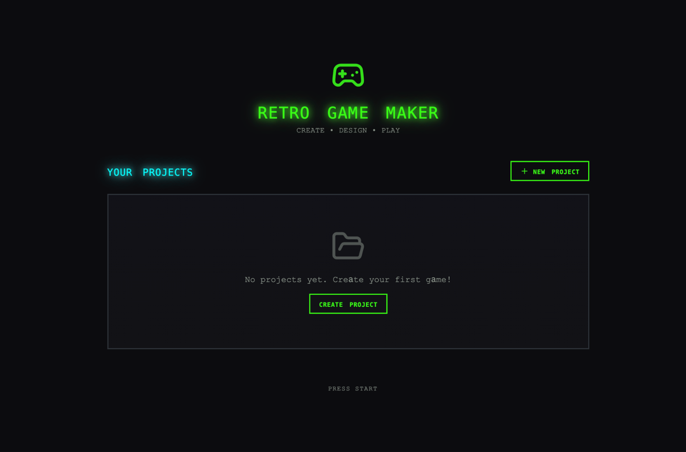
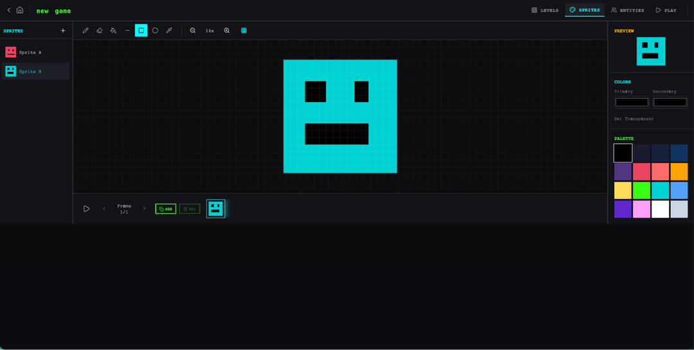
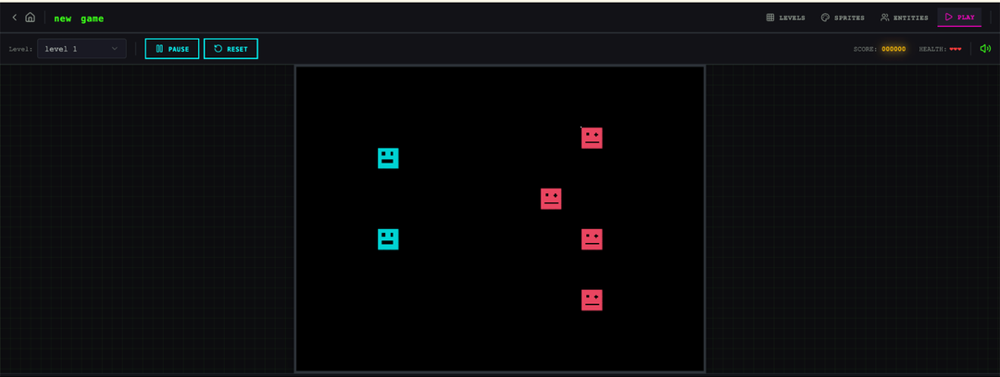
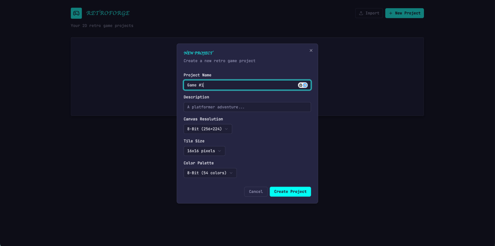
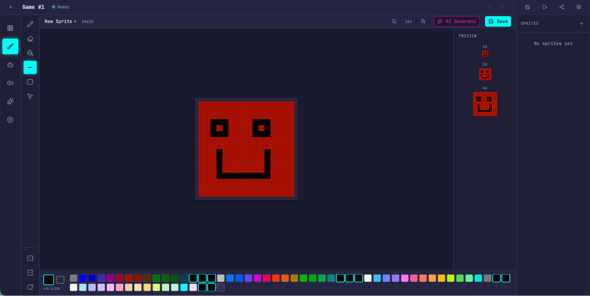
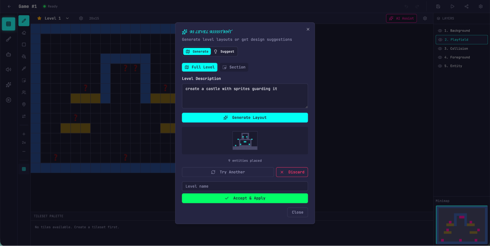
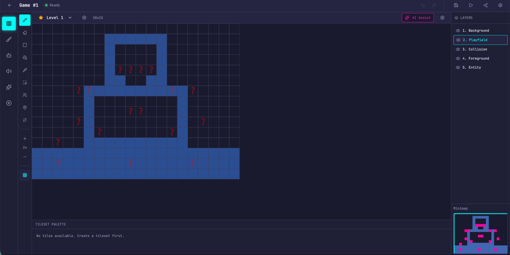
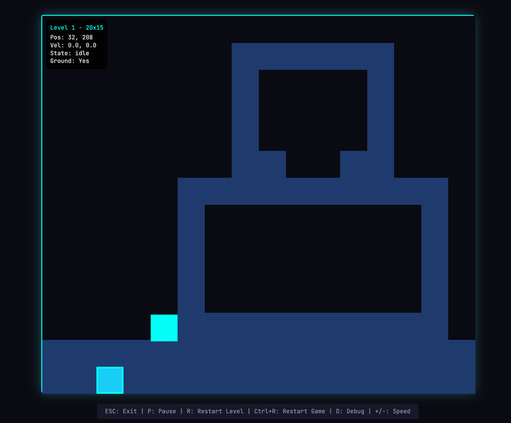

原文：Harness design for long-running application development 来源：Anthropic Engineering | 2026-03-24 作者：Prithvi Rajasekaran
· · ·
· · ·
过去几个月，作者一直在解决两个相互关联的问题：让 Claude 产出高质量的前端设计，以及让它在无人干预的情况下构建完整应用。这项工作源于早期在 frontend design skill 和长时间运行 coding agent harness 上的努力——通过 prompt engineering 和 harness 设计将 Claude 的性能提升到远超基线，但两者最终都撞上了天花板。
为了突破，作者从 GAN（生成对抗网络） 中获得灵感，设计了一个包含 generator（生成器） 和 evaluator（评估器） 的多 agent 结构。构建一个能可靠评分——且有品味——的 evaluator，意味着首先要开发一套标准，将"这个设计好不好？"这样的主观判断转化为具体的、可评分的条目。
最终成果是一个三 agent 架构——planner、generator、evaluator——在多小时的自主编码 session 中产出了丰富的全栈应用。
· · ·
在早期实验中，团队用 initializer agent 将产品 spec 分解为任务列表，coding agent 一次实现一个功能，然后通过 artifact 在 session 间传递上下文。社区也收敛到了类似的洞察，比如 "Ralph Wiggum" 方法用 hook 或脚本让 agent 持续迭代。
但两个问题仍然顽固：
模型在长任务中随着上下文窗口填满而失去连贯性（参见上下文工程一文）。有些模型还表现出 "context anxiety"（上下文焦虑）——当它们认为接近上下文限制时，会过早地收尾工作。
Context reset（上下文重置） 解决了这个问题：完全清空上下文窗口，启动一个全新 agent，配合结构化的 handoff 来传递前一个 agent 的状态和下一步。这和 compaction 不同——compaction 是原地压缩早期对话让同一个 agent 继续，但不给 agent 一个干净的起点，context anxiety 仍可能持续。
在早期测试中，Claude Sonnet 4.5 的 context anxiety 严重到 compaction 不足以支撑长任务性能，context reset 成为 harness 设计的必要组件。代价是增加了编排复杂度、token 开销和延迟。
当被要求评估自己产出的工作时，agent 倾向于自信地赞美——即使在人类观察者看来质量明显平庸。这个问题在设计这类主观任务上尤为突出，因为没有等价于可验证软件测试的二元检查。
将做事的 agent 和评判的 agent 分开，是解决这个问题的强力杠杆。分离本身不会立即消除宽容倾向——evaluator 仍然是一个倾向于对 LLM 生成内容宽容的 LLM。但调优一个独立的 evaluator 使其持怀疑态度，比让 generator 对自己的工作保持批判要容易得多。一旦外部反馈存在，generator 就有了具体的东西可以迭代。
· · ·
作者从前端设计开始实验，因为自我评估问题在这里最明显。没有任何干预时，Claude 通常倾向于安全、可预测的布局——技术上能用但视觉上平庸。
两个洞察塑造了这个 harness：
1. 虽然美学不能完全还原为分数，但可以通过编码设计原则和偏好的评分标准来改进。"这个设计漂亮吗？"很难一致回答，但"这是否遵循了我们的好设计原则？"给了 Claude 具体的评分依据。 2. 将前端生成和前端评分分开，可以创建一个驱动 generator 产出更强输出的反馈循环。
作者编写了四个评分标准，同时给到 generator 和 evaluator 的 prompt 中：
作者强调 design quality 和 originality 高于 craft 和 functionality——Claude 在后两者上默认就表现不错，但在设计和原创性上经常产出平淡的输出。标准明确惩罚高度通用的"AI slop"模式。
基于 Claude Agent SDK 构建循环：
1. Generator 根据用户 prompt 创建 HTML/CSS/JS 前端 2. Evaluator 通过 Playwright MCP 与实际页面交互——导航、截图、仔细研究实现——然后对每个标准评分并写详细批评 3. 反馈流回 generator 作为下一次迭代的输入 4. 每次生成运行 5-15 次迭代
每个周期因为 evaluator 在主动导航页面而非评分静态截图，需要真实的时钟时间。完整运行可达四小时。
Generator 在每次评估后做战略决策：如果分数趋势良好就精炼当前方向，如果方法不奏效就转向完全不同的美学。
作者提示模型为一个荷兰艺术博物馆创建网站。到第九次迭代，产出了一个干净的深色主题着陆页。然后在第十个周期，它完全推翻了方案，将网站重新想象为一个空间体验：一个用 CSS 透视渲染的棋盘格地板 3D 房间，艺术品以自由形式挂在墙上，用门廊式导航在画廊房间之间切换。这是作者从未在单次生成中见过的创意飞跃。
· · ·
Generator-evaluator 循环自然映射到软件开发生命周期，其中代码审查和 QA 扮演与设计 evaluator 相同的结构角色。
Planner（规划器）： 之前的 harness 要求用户预先提供详细 spec。作者想自动化这一步，创建了一个 planner agent，接受简单的 1-4 句 prompt 并扩展为完整产品 spec。提示它在范围上要有野心，专注于产品上下文和高层技术设计而非细粒度技术实现——如果 planner 试图预先指定细节并出错，spec 中的错误会级联到下游实现。还要求 planner 寻找机会将 AI 功能编织进产品 spec。
Generator（生成器）： 沿用早期 harness 的一次一个功能方法。指示 generator 以 sprint 方式工作，从 spec 中逐个拾取功能。每个 sprint 用 React、Vite、FastAPI 和 SQLite（后来是 PostgreSQL）栈实现，generator 在每个 sprint 结束时自我评估后交给 QA。还有 git 做版本控制。
Evaluator（评估器）： 用 Playwright MCP 像用户一样点击运行中的应用，测试 UI 功能、API 端点和数据库状态。然后根据发现的 bug 和一组标准（改编自前端实验，覆盖产品深度、功能性、视觉设计和代码质量）对每个 sprint 评分。每个标准有硬阈值，任何一个低于阈值，sprint 就失败，generator 获得详细反馈。
每个 sprint 之前，generator 和 evaluator 协商一个 sprint contract（sprint 合同）：在写任何代码之前就"完成"的定义达成一致。这是因为产品 spec 故意保持高层，需要一个步骤来弥合用户故事和可测试实现之间的差距。Generator 提出要构建什么以及如何验证成功，evaluator 审查提案确保 generator 在构建正确的东西。两者迭代直到达成一致。
通信通过文件处理：一个 agent 写文件，另一个读取并在该文件内或用新文件回应。
· · ·
用 Claude Opus 4.5 运行，prompt 为："Create a 2D retro game maker with features including a level editor, sprite editor, entity behaviors, and a playable test mode."
| Harness | 时长 | 成本 |
|---|---|---|
| Solo（单 agent） | 20 min | $9 |
| Full harness | 6 hr | $200 |
Harness 贵了 20 倍以上，但输出质量差异立即可见。

初始应用看起来符合预期，但点击后问题开始浮现：布局浪费空间，工作流僵硬，最关键的是——游戏本身是坏的。实体出现在屏幕上但不响应输入。代码中实体定义和游戏运行时之间的连线是断的。


Planner 将一句话 prompt 扩展为 16 个功能的 spec，分布在十个 sprint 中。除了核心编辑器和游戏模式，spec 还包括精灵动画系统、行为模板、音效和音乐、AI 辅助精灵生成器和关卡设计器、游戏导出和分享链接。

应用立即展现出比 solo 运行更多的打磨和流畅度。画布使用了完整视口，面板大小合理，界面有一致的视觉身份。

因为要求 planner 编织 AI 功能，应用还内置了 Claude 集成，可以通过 prompt 生成游戏的不同部分。


最大的差异在游戏模式——实际上能移动实体并玩游戏。物理有些粗糙边缘，但核心功能工作了，而 solo 运行完全没做到。

Sprint 3 单独就有 27 个标准覆盖关卡编辑器。Evaluator 的发现足够具体，可以直接行动：
| 合同标准 | Evaluator 发现 |
|---|---|
| 矩形填充工具允许点击拖拽用选中的 tile 填充矩形区域 | FAIL — 工具只在拖拽起止点放置 tile 而非填充区域。fillRectangle 函数存在但在 mouseUp 时未正确触发。 |
| 用户可以选择和删除已放置的实体生成点 | FAIL — LevelEditor.tsx:892 的 Delete 键处理器要求 selection 和 selectedEntityId 都被设置，但点击实体只设置了 selectedEntityId。条件应为 selection OR (selectedEntityId && activeLayer === 'entity')。 |
| 用户可以通过 API 重排动画帧 | FAIL — PUT /frames/reorder 路由定义在 /{frame_id} 路由之后。FastAPI 将 'reorder' 匹配为 frame_id 整数并返回 422。 |
开箱即用的 Claude 是一个糟糕的 QA agent。在早期运行中，作者看到它识别出合理的问题，然后说服自己这些不是大问题并批准工作。它也倾向于表面测试而非探测边缘情况。
调优循环：读 evaluator 的日志，找到其判断与作者判断分歧的例子，更新 QA 的 prompt 来解决这些问题。经过几轮开发循环后，evaluator 才以作者认为合理的方式评分。
· · ·
第一版 harness 结果令人鼓舞，但笨重、慢、贵。下一步是找到简化方式而不降低性能。
核心原则：harness 中的每个组件都编码了一个关于模型不能自己做什么的假设，这些假设值得压力测试——因为它们可能不正确，也因为随着模型改进它们会很快过时。Building Effective Agents 将底层思想表述为"找到最简单的可能解决方案，只在需要时增加复杂度"。
随着 Opus 4.6 发布，有充分理由减少 harness 复杂度。Opus 4.6 "规划更仔细，能更长时间维持 agentic 任务，在更大代码库中更可靠地运行，有更好的代码审查和调试技能来捕获自己的错误"。它在长上下文检索上也有实质性改进。
作者完全移除了 sprint 结构。Sprint 结构曾帮助将工作分解为模型能连贯处理的块。鉴于 Opus 4.6 的改进，模型可以原生处理这项工作而不需要这种分解。
保留了 planner 和 evaluator——没有 planner，generator 会低估范围；evaluator 移到运行结束时做单次评估。
在 4.5 上，构建处于 generator 能独立做好的边缘，evaluator 在整个构建中捕获有意义的问题。在 4.6 上，模型原始能力增加，边界外移。曾经需要 evaluator 检查才能连贯实现的任务，现在往往在 generator 独立处理的范围内。
实际含义：evaluator 不是固定的是/否决策。当任务超出当前模型能可靠独立完成的范围时，它才值得成本。
· · ·
Prompt："Build a fully featured DAW in the browser using the Web Audio API."
| Agent & Phase | 时长 | 成本 |
|---|---|---|
| Planner | 4.7 min | $0.46 |
| Build (Round 1) | 2 hr 7 min | $71.08 |
| QA (Round 1) | 8.8 min | $3.24 |
| Build (Round 2) | 1 hr 2 min | $36.89 |
| QA (Round 2) | 6.8 min | $3.09 |
| Build (Round 3) | 10.9 min | $5.88 |
| QA (Round 3) | 9.6 min | $4.06 |
| Total V2 Harness | 3 hr 50 min | $124.70 |
大部分时间花在 builder 上，它连贯运行了超过两小时——不需要 Opus 4.5 所需的 sprint 分解。
第一轮 QA 反馈：
这是一个强大的应用，设计保真度出色，AI agent 扎实，后端良好。主要失败点是功能完整性——虽然应用看起来令人印象深刻且 AI 集成工作良好，但几个核心 DAW 功能只是展示而没有交互深度：clip 不能在时间线上拖拽/移动，没有乐器 UI 面板（合成器旋钮、鼓垫），没有可视化效果编辑器（EQ 曲线、压缩器仪表）。这些不是边缘情况——它们是让 DAW 可用的核心交互，spec 明确要求了它们。
第二轮 QA 反馈：
剩余差距： - 音频录制仍然只是 stub（按钮切换但没有麦克风捕获） - Clip 边缘拖拽调整大小和 clip 分割未实现 - 效果可视化是数字滑块，不是图形化的（没有 EQ 曲线）
Generator 在独自工作时仍然容易遗漏细节或 stub 功能，QA 在捕获这些最后一英里问题上仍有价值。
最终应用有一个功能性音乐制作程序的所有核心部件：工作的编排视图、混音器和传输在浏览器中运行。通过 prompt 完成了一个简短的歌曲片段：agent 设置了节拍和调性，铺设了旋律，构建了鼓轨，调整了混音器电平，添加了混响。
· · ·
随着模型持续改进，我们大致可以预期它们能工作更长时间、处理更复杂的任务。在某些情况下，模型周围的脚手架会随时间变得不那么重要。另一方面，模型越好，开发能实现超出模型基线能力的复杂任务的 harness 的空间就越大。
几个值得带走的经验：
1. 始终实验：对你正在构建的模型进行实验，在真实问题上读它的 trace，调优性能以达到期望结果。 2. 分解复杂任务：有时通过分解任务并对问题的每个方面应用专门化 agent 可以获得提升空间。 3. 新模型到来时重新审视 harness：剥离不再对性能有承重作用的部分，添加新部分以实现之前不可能的更大能力。
作者的信念：有趣的 harness 组合空间不会随着模型改进而缩小。相反，它在移动，AI 工程师的有趣工作是不断找到下一个新颖的组合。